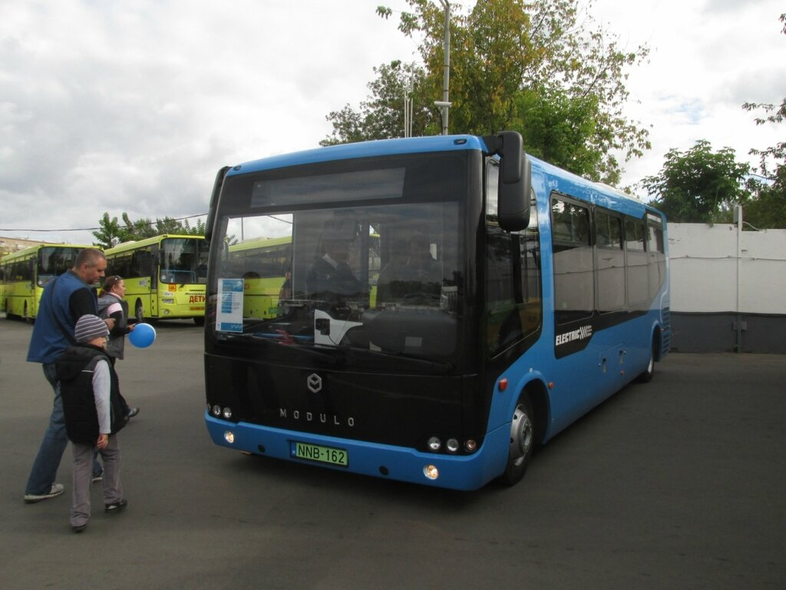

Электробус, как следует из названия, - это электрический автобус. «Чем же тогда он отличается от троллейбуса» - спросите вы? Главное отличие - в способе получения электроэнергии от сети. Если троллейбус получает её напрямую от проводов, то электробус имеет ёмкую батарею и заряжается в парке или на конечных станциях. У электробуса нет штанги или «рогов», как у троллейбуса. Есть только специальный токоприёмник, по которому и происходит зарядка.
Электробус не привязан к контактной сети – и в этом его ключевое преимущество! Можно направлять его на любые маршруты по любым улицам,
главное – чтобы на конечных станциях или, хотя бы, на промежуточных остановках была зарядная инфраструктура.
Но на этом его преимущества и заканчиваются. И сразу всплывают многочисленные недостатки.
1) Трата времени на зарядку. Существуют два способа заряжать электробусы: оба одинаково плохи.
Первый – зарядка в ночное время в парках. Плох тем, что требуется 1) очень высокая мощность (сразу тысячи машин заряжаются в один момент времени), 2) ёмкая батарея, которая будет занимать 30-40% салона. Хорош тем, что не надо будет тратить время на конечных.
Второй – зарядка на остановках и конечных станциях. Плох тем, что тратится полезное время, в которое электробус мог бы перевозить пассажиров. В итоге на обслуживание маршрута с той же частотой потребуется больше машин.
Самый экстравагантный способ – зарядка на остановках. Но, опять же, от физики не убежишь. Нужно либо высокое напряжение за короткий момент времени, либо, опять же, больше стоять на остановке. Первое очень дорого, второе – по понятным причинам неудобно для пассажиров.
2) Опасность разрядки во время пути. Если произошла непредвиденная ситуация, и электробус разрядится на маршруте – увезти его можно будет только тягачом. Соответственно – срыв выпуска. А ситуации могут быть разные – пробки, холод, ДТП, глюк батареи. К слову сказать, как будут вести себя батареи электробусов при -30 никто не проверял пока (в широтах где встречаются такие температуры, электробусы ещё не эксплуатировались).
3) Утилизация батарей. Никто не задаёт этот вопрос, а зря. Этот момент существенно же снижает экологичность технологии.
4) Дизельный отопитель. Смешно – но электробусы все равно требуют дизельного топлива. В целях экономии батареи отопление в машинах работает на дизеле. Что же это за экологический транспорт такой, что все равно от нефтепродуктов не уйдёшь?
5) Цена. Из-за новизны технологии электробусы выходят существенно дороже как автобусов, так и троллейбусов.
6) Потери электроэнергии. Известно, что на каждом передаточном звене энергия теряется. Если троллейбус энергию из проводов сразу направляет в двигатель, то электробус сначала не получает её всю при заряде, а потом теряет её по ходу движения. Чем дольше ездит, тем дольше потери. Если батарея старая, или погода холодная, потери во время движения могут быть вполне ощутимыми – до 30-40%. А ведь любая батарея довольно быстро начинает терять в качестве – 2-4 года.
7) Катание тяжёлой батареи. Известная дилемма космонавта или пешего туриста: сколько с собой взять топлива (еды). Возьмёшь мало – далеко не улетишь/не уйдёшь. Возьмёшь много – всё на себе тащить. Троллейбус избавлен от этой проблемы полностью – он по ходу движения питается. А тут немало энергии будет уходить на перевозку ёмкостей энергии.
Таким образом, суммарно получаем сомнительный результат: более дорогой транспорт, которого требуется численно больше (на такую же интенсивность движения), который может разрядиться и намертво встать где угодно, электроэнергии для проезда на то же расстояние которого нужно также больше из-за потерь и перевозки батареи.
И всё ради того, чтобы не заморачиваться с контактной сетью? Но ведь все равно потребуется содержание инфраструктуры в виде подстанций и зарядных станций.
В принципе, электробусы – идея интересная и правильная. Но заменять они должны дизельные автобусы, а не троллейбусы, тогда это будет прогресс. Однако в ситуации, когда кто-то наверху какой-то животной ненавистью не любит именно троллейбусы, выбирать не приходится. Однако же для адекватной замены троллейбусов электробусами эту новую технологию надо отладить, отработать, посмотреть, как она себя ведёт в разных условиях. Особенно важно зимний сезон пережить. Запустить хотя бы один маршрут на них, а потом плавно расширять сеть, и уже тогда смотреть по факту что оптимальнее - ставить их на троллейбусные маршруты, или, всё же заменять ими неэкологичные автобусы.
А пока говорить о том, что технология ещё сырая, было бы неправильно. Технология вообще фактически отсутствующая! Вы хоть раз в жизни видели живой электробус? Я вот.. честно скажу, видел пару раз. Правда в стоящем состоянии. На самом деле, в Москву уже несколько лет как привозят разные образцы для тестирования, но все они, покатавшись, поломавшись, уезжают обратно несолоно хлебавши. Ну ё-моё, если уж хотели бы, за столько лет можно было бы хотя бы одну серийную модель изобразить, а не недоделанные тестовые образцы?
Я помню, что ещё в 2015 году на трамвайный парад приезжал электробус от КАМАЗа, где же он теперь?
Электробус б/у из Китая. Покатался немного по Москве, а потом его увезли в Челябинск.
Много было и других электробусов. Финский, от ЛиАЗа, и от "Белкоммунмаша". Последний, кстати, напоминает подобный же дуобус (троллейбусо-автобус), который также тестировался год назад на бывшем 25 маршруте, но от которого, к сожалению, тоже отказались. А подобные электробусы в небольшом количестве начали тестироваться и в Минске.
Есть ещё один электробус в Сколково. Но по факту это всё, что удалось наскрести за этот год, тестировались они совсем недолго, и большая часть этих недоделок куда-то уже уехала.
Но по факту же электробусы упорно входят в нашу жизнь, пока ни разу не войдя в неё. Отсутствие регулярного движения хотя бы на одном маршруте (!) не мешает Собянину или Михайлову упоминать постоянно их как вполне работоспособный и действующий транспорт. Трамвай, автобус, электробус - звучит в будничных фразах из их уст, именно так, через запятую. Типа: "Мы можем посмотреть в приложении через сколько нужный нам автобус или электробус подойдёт к нашей остановке".
При этом слово «троллейбус», который пока ещё эксплуатируется в количестве более 1000 штук, вы от них последнее время не услышите, это хуже чем слово «Навальный» для Путина. Ликсутов вообще отжигает. Вот что он сказал в недавнем интервью::
И еще могу сказать, что разговаривая с экспертами с точки зрения развития электрического транспорта, все эксперты большие прогнозируют в ближайшие несколько лет существенное увеличение емкости батарей. То есть прогноз у них очень большой. Сейчас 400 кг, в ближайшие несколько лет это может быть в два раза меньше, а то и в три раза меньше. Поэтому мы очень рассчитываем на то, что электрическая батарея будет все лучше и лучше и решит кучу проблем. Мало того, эксперты, я разговаривал с одними ведущими сотрудниками нашего одного из крупнейших научных институтов России, которые занимаются электричеством, они прогнозируют то, что батареи через десять лет будут такой емкости, что в принципе, надо будет задумать и в метро, не нужен контактный рельс на протяжении всего следования поезда, достаточно будет зарядить в начале и в конце поездки.
Ну прекрасно просто. Скоро, скоро, скоро. Вот нам надо тут сидеть, сложа руки, и ждать, когда эта ёмкость "существенно увеличится" и батареи решат кучу проблем.
А есть ли идеальное решение? Есть! Оно называется «Троллейбус с большим автономным ходом». Он сочетает в себе преимущества как троллейбуса, так и электробуса. И также лишён их недостатков. Он может спокойно ездить до 60 км на батарее, а может заряжаться от контактной сети. Которая УЖЕ есть, которую не надо с нуля создавать! Почему его не хотят брать наши руководители – вот это большой вопрос. И нельзя сказать, что это что-то эфемерное - подобные троллейбусы есть не то что в других странах, они эксплуатируются уже давно во многих регионах России! Вот, например, Вологда. Фото 2013 года! Троллейбус проходит порядка 2-3 км по участку без контактной сети.
Есть также машины с длительным автономным ходом, в Новосибирске, Барнауле, Братске, Туле, Симферополе, Севастополе, Нальчике и других городах. Там троллейбусы вполне успешно в штатном режиме ездят по маршрутам с участками без контактной сети.
Такое бы сразу решило много проблем. На самом деле в конце 2016 года уже должны были прийти 12 таких троллейбусов от «Тролзы». Они были в контракте, за них было заплачено. Но «Мосгортранс» покривил лицом, и договор расторгли. Троллейбусы ушли в Питер.
Как бы то ни было, Мосгортранс собирается теперь закупать по 300 электробусов в год. Всё серьёзно: недавно проектировалось ТЗ на эти самые электробусы. Внести свои пожелания в него могли все желающие. Требование динамической подзарядки (как раз возможность брать энергию от контактной сети троллейбуса) упорно отклонялось. Хотя назови троллейбус «электробусом с динамической подзарядкой» и всё бы было хорошо. Что это как не религиозная ненависть?
Самое фееричное, что уже есть решение правительства после 2021 года закупать ТОЛЬКО электробусы! Никаких ни то что троллейбусов, но даже и автобусов. Вы представляете? Их ещё вообще нет, они нигде не ходят. Никто не испытывал то, как они будут работать в течение длительного времени зимой, как будут батареи разряжаться при больших пассажиропотоках, не будут ли они портиться из-за наших знаменитых реагентов. Непонятно в принципе, как вообще (несуществующая, опять же, пока) зарядная инфраструктура будет справляться с одновременной зарядкой большого числа машин.
Но никого эти вопросы не интересуют. Есть установка - покупать через 4 года ТОЛЬКО их, значит надо исполнять.. Чувствую, что мы так вообще без какого-либо транспорта останемся – только метро с МЦК и несколькими трамваями.
Даже если от всех недостатков электробуса абстрагироваться. Даже если поверить в то, что Ликсутов с Собяниным искренне хотят развивать электробус, нельзя забывать о том, что завтра может случиться что угодно. Кризис, не дай Бог, конечно, очередная какая-нибудь нестабильность в стране, как у нас неоднократно бывало. И может стать совсем не до электробусов! А троллейбус уже, в расчёте на эти электробусы, будет ликвидирован. И что тогда? Останемся в итоге вообще без ничего, с одними автобусами, которые в кризисные периоды вообще наиболее нестабильными оказываются (как показал опыт 1991 года)..
А что в мире? Вообще эксперименты с электробусами действительно проводят во многих странах. Но пока массового использования эта технология не особо много где получила. Почти везде если и есть электробусы, то ходят они в незначительном количестве 3-5, реже - 10-15 штук. Причины? Они все описаны тут выше.
Автобусы ездят по чётко известному маршруту, вдоль которого через каждые максимум 5 км должны располагаться станции быстрой зарядки на остановках. Токоприёмник на этих станциях поднимается до зарядного устройства, и, касаясь его, полностью заряжает батарею электробуса всего за пару минут.
Так или иначе, китайцы потихоньку сворачивают развитие электробусов, возвращаясь к усовершенствованному троллейбусу – тому самому «электробусу с динамической подзарядкой».
В любом случае, в развитии новой технологии нет ничего плохого. Плохое есть в том, что ради отсутствующей пока совершенно непроработанной технологии уничтожается действующая рабочая. Которая стабильно и надёжно функционирует девятый десяток лет и проверена временем. Уничтожается не потому что она имеет какие-то недостатки (при несущественной доработке здесь может будет получен парктически идеальный результат). Просто потому что кому-то «там» оно не нравится. Те же европейцы, которые по дурости своей поуничтожали свои троллейбусные сети, в 70-е, сейчас сильно сожалеют о своих ошибках, и о том, что у них нет такого потенциала как у нас. Они также с нуля развивают электробусы, но, как видим, даже они приходят к тому, что «электробус с динамической подзарядкой» - наиболее оптимальное решение. Но нам, почему-то, надо обязательно снова и снова наступать на те же грабли, хотя есть такая уникальная возможность, этого не делать, воспользовавшись мировым опытом..
По материалам сайта: https://griphon.livejournal.com/377627.html#comments